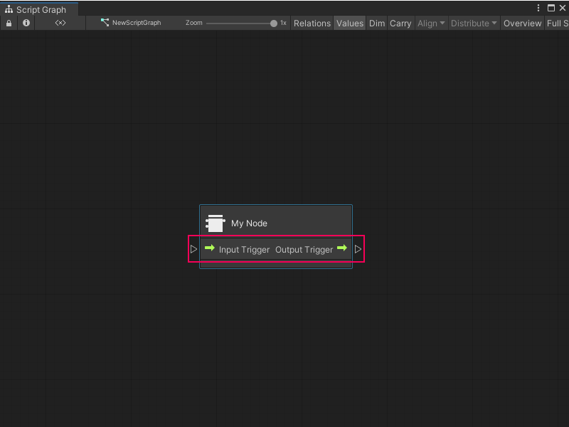
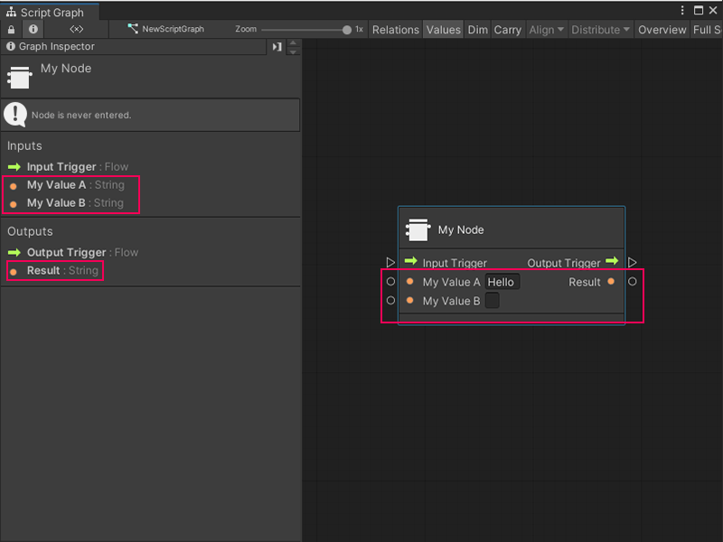

Add ports to a Custom C# node¶
[!NOTE] To add ports to your node, you must create the C# file for the node. [!includevs-tasks-note-end]
After you create a Custom C# node, add ports to allow the node to send and receive data or trigger other nodes in a Script Graph.
To add ports to a node:
[!includeopen-project-window]
[!includeopen-existing-external-code]
Add control ports¶
In your external editor, under the class definition for the node, add two public variables: one with a ControlInput type and one with a ControlOutput type.
In the
Definitionmethod for the node, use the variables to define the control ports, as shown below:using System; using Unity.VisualScripting; using UnityEngine; public class MyNode : Unit { [DoNotSerialize] // No need to serialize ports. public ControlInput inputTrigger; //Adding the ControlInput port variable [DoNotSerialize] // No need to serialize ports. public ControlOutput outputTrigger;//Adding the ControlOutput port variable. protected override void Definition() { //Making the ControlInput port visible, setting its key and running the anonymous action method to pass the flow to the outputTrigger port. inputTrigger = ControlInput("inputTrigger", (flow) => { return outputTrigger; }); //Making the ControlOutput port visible and setting its key. outputTrigger = ControlOutput("outputTrigger"); } }
[!includesave-script]
[!includereturn-unity]
Do one of the following:
[!includeopen-graph-w-node].
[!includeff-add-node]
If you used the previous code sample, Visual Scripting adds input and output control ports to the node.

Add value ports¶
In your external editor, under the class definition for the node, add any number of variables with either a Generic or specific type value:
Generic: The port can receive or output any data type. Corresponds to Unity’s Object type.
Specific Type Value: The port can only receive or output a specific data type. For example,
string,float, orinteger.
For more information on types in Visual Scripting, see Object types.
In the
Definitionmethod for the node, use the variables to define the value ports. In the example below, there are two input ports with a type value ofstring, and onestringoutput port:using System; using Unity.VisualScripting; using UnityEngine; public class MyNode : Unit { [DoNotSerialize] public ControlInput inputTrigger; [DoNotSerialize] public ControlOutput outputTrigger; [DoNotSerialize] // No need to serialize ports public ValueInput myValueA; // Adding the ValueInput variable for myValueA [DoNotSerialize] // No need to serialize ports public ValueInput myValueB; // Adding the ValueInput variable for myValueB [DoNotSerialize] // No need to serialize ports public ValueOutput result; // Adding the ValueOutput variable for result private string resultValue; // Adding the string variable for the processed result value protected override void Definition() { inputTrigger = ControlInput("inputTrigger", (flow) => { return outputTrigger; }); outputTrigger = ControlOutput("outputTrigger"); //Making the myValueA input value port visible, setting the port label name to myValueA and setting its default value to Hello. myValueA = ValueInput<string>("myValueA", "Hello "); //Making the myValueB input value port visible, setting the port label name to myValueB and setting its default value to an empty string. myValueB = ValueInput<string>("myValueB", string.Empty); //Making the result output value port visible, setting the port label name to result and setting its default value to the resultValue variable. result = ValueOutput<string>("result", (flow) => { return resultValue; }); } }
[!includesave-script]
[!includereturn-unity]
Do one of the following:
[!includeopen-graph-w-node].
[!includeff-add-node]
If you used the previous code sample, Visual Scripting adds two input ports, My Value A and My Value B, and one output port, Result to the node.

Next steps¶
After you add ports to a node, add logic to tell the node what to do with the data it receives.